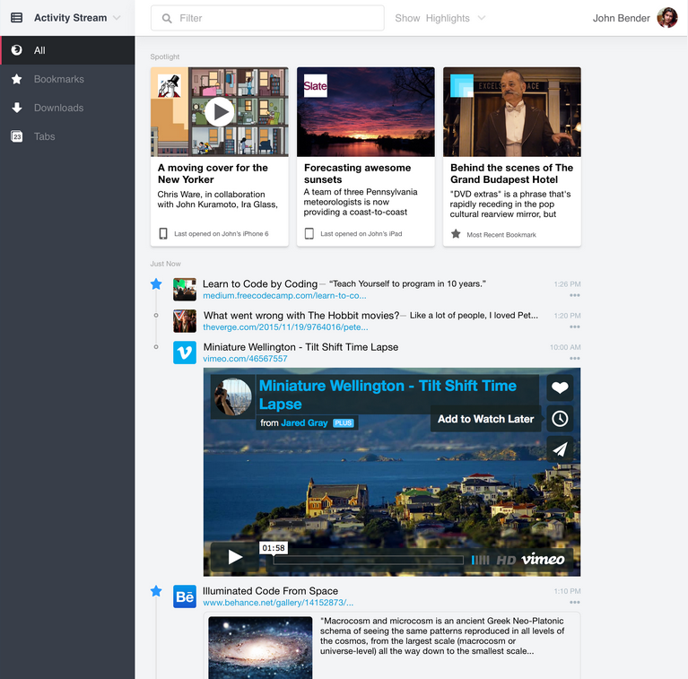

Firefox (DevConf.cz 2016)
Michal Stanke
<mstanke@mozilla.cz>
@MozillaCZ
DevConf.cz 2016, Brno
Firefox
Firefox recent fails
market share
Firefox OS
Firefox for Android
Great or Dead
new mantra
not everything is perfect
Great:
Add-ons, Developer Tools, Private browsing, Profiles, ...
Dead:
Panorama Tab Groups, Heavyweight Themes, Pocket, Hello, ...
Great for developers
Developer Tools
Firebug.next
Great for users
Private browsing
Firefox Account
Activity Stream
Activity stream

SERVO
SERVO
written is Rust
multi-threaded page rendering
everyting
in parallel
memory efficient
experimental project only
SERVO - What works
ACID2
Wikipedia
GitHub
Mozilla.cz
What do
you
want to see?
SERVO - Future
2016
performance Servo/Gecko/Blink
simple browser (+ browser.html)
replace first Gecko component
Thank you
Michal Stanke
@MozillaCZ
Photo by Yortw